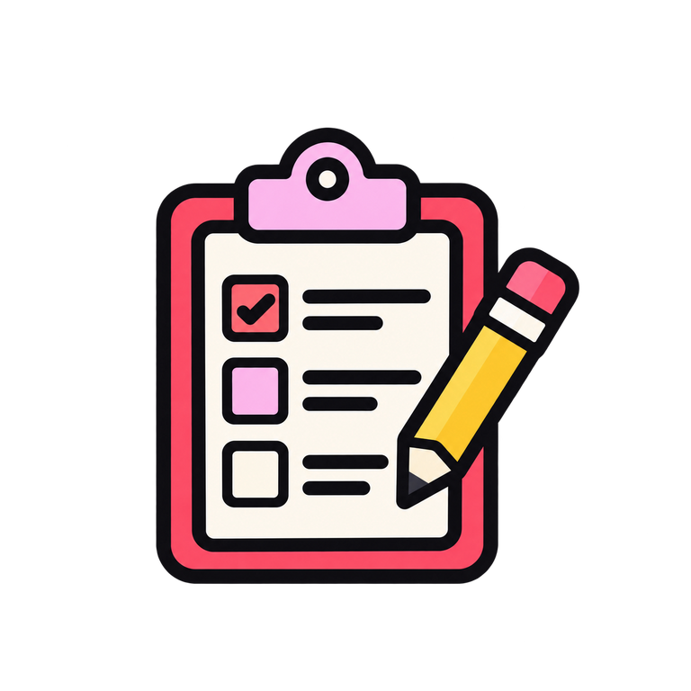

문제 1
예상문제

과목별 예상문제과목을 고른 뒤 10문제·20문제 또는 전체 문제를 선택해 풀어봐.
과목별 JSON 문제은행을 불러오는 중이야.
반복 암기
핵심 개념 퀴즈
과목별 괄호 문제 10문제·20문제 또는 전체 문제를 선택해 풀어봐. 학습용 자체제작 문제야.
예상문제

과목별 예상문제과목을 고른 뒤 10문제·20문제 또는 전체 문제를 선택해 풀어봐.
과목별 JSON 문제은행을 불러오는 중이야.
반복 암기
과목별 괄호 문제 10문제·20문제 또는 전체 문제를 선택해 풀어봐. 학습용 자체제작 문제야.